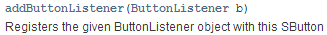
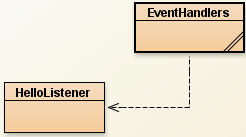
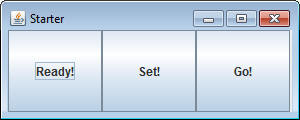
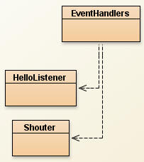
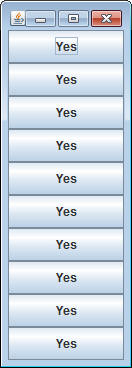
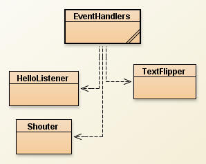
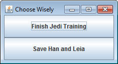
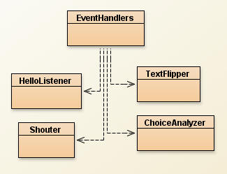
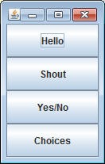

Objects are created to keep track of information and perform actions using that information. An SFrame, for example, keeps track of the size and title of the window. It has many actions it can perform, such as adding an SButton or to set the visibility.
SButton keeps track of the text that labels it, but another more important thing that it keeps track of is an object to handle what happens when it's clicked. That object doesn't exist yet, it will b our job to write it. Let's start with a basic GUI. Copy the following class into your project:
import sacco.gui.*;
public class EventHandlers
{
public static void myFirstHandler()
{
SFrame frame = new SFrame("One Button");
frame.setLayout(new GridLayout(1,1));
SButton button = new SButton("Click Me!");
//Line A: Add code here
frame.add(button);
frame.pack();
frame.setVisible(true);
}
}
There is not much to this layout; just a button added to a frame. At the moment clicking it does nothing, but we can change that. If you look at the API you'll see that the addButtonListener method takes in a ButtonListener object.

Go to the line of code that says //Line A: add code here and add the following lines (They will not compile yet because HelloListener doesn't exist yet, but that's alright):
HelloListener hListen = new HelloListener(); button.addButtonListener(hListen);
These two lines of code first construct a HelloListener object and then pass it into the addButtonListener method. Compiling this code should give an error to confirm that there is not actually a class named HelloListener. So let's write one:
The HelloListener Object
We need a SEPARATE class named HelloListener, which counts as a ButtonListener. Start with the following:
import sacco.gui.*;
public class HelloListener implements ButtonListener
{
}
Object School: Creating a constructor
The very first thing that every object does is get constructed. The constructor is simply some code that is run at the very birth of the object. This class doesn't require anything so the constructor will just be blank, but we'll write one anyway.
The constructor is a method that has no return type (no void, int, or String) and is named exactly the same as the class. Add the following code to your HelloListener class:
public HelloListener()
{
}
We'll work more with constructors later, but this is plenty for now.
Adding a Method
Once we've created the constructor it's time to add a method for every action that the object can perform. In this case we only need one. The "implements ButtonListener" portion is not required for every object you ever make. We are doing it here because we want it to fit in the "addButtonListener" method's parameter. This is similar to the way that SFrame's setLayout method can take in a GridLayout, FlowLayout, or BorderLayout.
Since we've said that we are going to implement ButtonListener, the compiler will give an error until we have a very specific method. Adding a method to an object is very similar to what we've been doing, but object methods are not static.
Add a method with the following header:
public void onButtonPress(SButton source)
This is the EXACT method that this class needs to compile. If you misspell it slightly or forget the parameter it will not compile. This is only because we want to use this particular object with SButtons.
Add a line of code so that this method prints out "Hello World" when it's called. At this point your code should compile. You'll even notice that BlueJ links the classes together to signify that one uses the other.

Recap: We've created the HelloListener object so that we could "addButtonListener" it to our button. When the button is clicked, it will call the addButtonListener method.
Run the program and watch what happens when you click the button. WOOOOOO!!!
More with the onButtonPressMethod
Start by adding a new method to your EventHandlers class with the following header
public static void mySecondHandler()
This method should create the following GUI:

Now create a separate class named Shouter. Similar to before make sure
that you:
- implement ButtonListener
- add a constructor (don't forget to name it after the class)
- add an onButtonPress method so that this can be a ButtonListener

Now let's look at the onButtonPress method. It has an SButton as a parameter (source). What really happens when you click is that the clicked Button calls that method and passes itself in as a parameter. This is how you can tell which button was clicked. Since it's an SButton, you can call any of the methods in the SButton API. The following code will get the text out the SButton.
String text = source.getText();
Add another line that will println out the text variable. This means that the onButtonPress method will print out the text of the button that was clicked.
Before you run, go back to the mySecondHandler method and construct a new Shouter object and "addButtonListener" it to all three buttons. If you don't do this, the buttons will not respond.
Run the program and click around the buttons. If done properly, the titles of those buttons should print as you click.
Modifying the Clicked Button
Add a new method named myThirdHandler and have it create the following GUI. You must use a loop to create the buttons for full credit.

Now create a ButtonListener object named TextFlipper. Add a constructor and an onButtonPress method. The onButtonPress method should look at the text of the source button. If the text says "Yes", use SButton's setText method to set the text to "No". If the text says "No", switch it to "Yes".

Run your program and make sure that every time you click the text toggles between "Yes" and "No".
Distinguishing Between Buttons
Now that we can get the text of the clicked button, we can now tell which button was clicked. Add a new method named myFourthHandler and have it create a GUI that presents one choice on each button. For example:

Now create a ButtonListener object named ChoiceAnalyzer. Add a constructor and an onButtonPress method. The onButtonPress method should look at the text of the source button and System.out.println a response to the button they pressed.
For Example: In my program, clicking the top button would print out "Enjoy the Degobah System!", while the bottom button would respond with "Try not to be eaten by Jabba's Rancor".

Program Launcher:
Add a method to your EventHandlers class named launcher(). The purpose of this method will be to have a GUI to launch the other GUIs. Have this method create a GUI like the one below:

Each button matches up with one of the other methods. Create an Object named LaunchListener, which is also a ButtonListener. In the onButtonPress method, use the text of the button to run one of the method from the EventHandlers class. Reminder: To call static methods (non-object methods) from the EventHandlers class, put the class name before the method call (instead of a variable).
For example: If the "Hello" button is pressed then I would call the myFirstHandler method like so:
EvenHandlers.myFirstHandler();
| A note about Objects you just made: - Not all objects have to implements ButtonListener or have the onButtonPress method. That was simply so that the objects would work with the buttons. - Right now the Constructors that we've written do nothing. This is just so we can get used to writing the special header that a Constructor has. As we write more and more complex objects, the constructors will be more complicated. |